Class 9 Social Science (SST) Notes
Interactive CBSE Class 9 Social Science (SST) notes from Notesflix 101. They follow the new NCERT textbook Understanding Society: India and Beyond (2026-27). Each chapter is broken into short parts with easy explanations, picture stories, flash cards, quizzes and board-style exam questions with model answers. 15 of 29 parts are free to read with no password (Part 1 of every chapter). The other parts open with a password from Notesflix 101.
Chapters
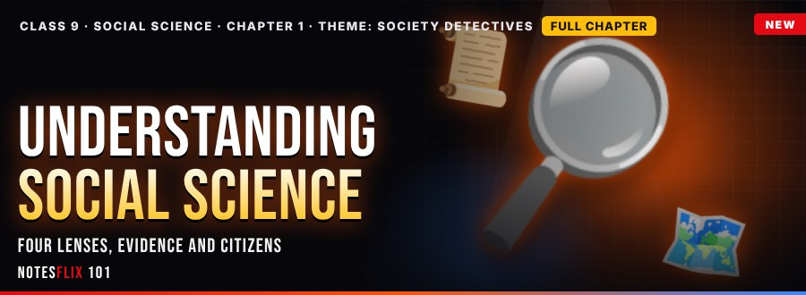
Part 1 1: Understanding Social Science
The four lenses, evidence, sources, timelines and why citizens study society
- Society DetectivesFREE — History, geography, political science and economics as four lenses, primary and secondary sources, fact and opinion, BCE and CE timelines, and informed citizenship, with a years-between calculator, sorting games and a boss battle. (30 min)
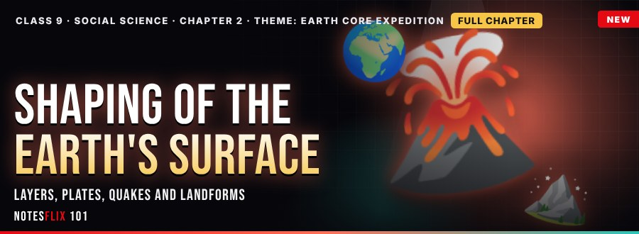
Part 1 2: Shaping of the Earth's Surface
Layers of the Earth, moving plates, earthquakes, volcanoes, rocks, weathering and landforms
- Earth Core ExpeditionFREE — Layers of the Earth, plate tectonics and boundaries, earthquakes and volcanoes, with a plate-distance calculator, a magnitude simulator, sorting games and a boss battle. (35 min)
- Rocks and LandformsPASSWORD — Igneous, sedimentary and metamorphic rocks and the rock cycle, weathering, erosion and deposition, and mountains, plateaus and plains, with an age-of-layers calculator, a cliff-retreat simulator, sorting games and a boss battle. (35 min)
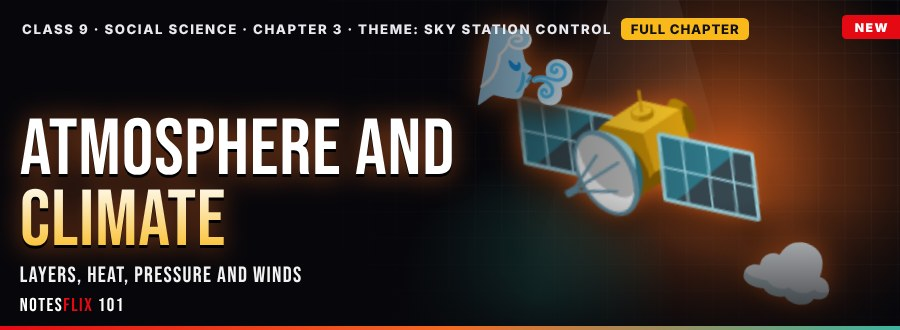
Part 1 3: Atmosphere and Climate
Layers of the atmosphere, heat, pressure, winds, weather and the climates of the world
- Sky Station ControlFREE — Gases and layers of the atmosphere, heating and temperature, air pressure and winds, with a lapse-rate calculator, a pressure-gradient simulator, sorting games and a boss battle. (35 min)
- Weather and ClimatePASSWORD — Humidity, condensation and clouds, types of rainfall and the monsoon, weather, climate and global warming, with a relative-humidity calculator, a rainfall simulator, sorting games and a boss battle. (35 min)
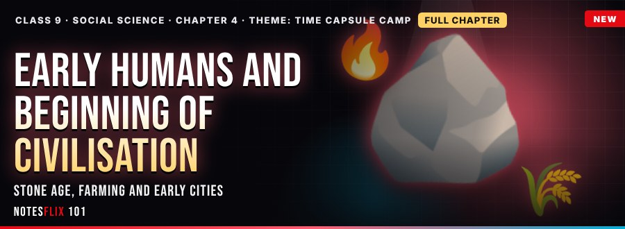
Part 1 4: Early Humans and Beginning of Civilisation
The Stone Age, tools and fire, cave art, the first farmers and the early river-valley civilisations
- The Time CapsuleFREE — Hunter-gatherers of the Old Stone Age, the Mesolithic and Bhimbetka rock art, and the Neolithic first farmers and villages, with a duration calculator, a surplus simulator, sorting games and a boss battle. (35 min)
- Cities by the RiversPASSWORD — What makes a civilisation, the planned Harappan cities with their drains, seals and trade, and the river civilisations of Mesopotamia, Egypt and China, with a city-feeding calculator, a street-grid simulator, sorting games and a boss battle. (35 min)
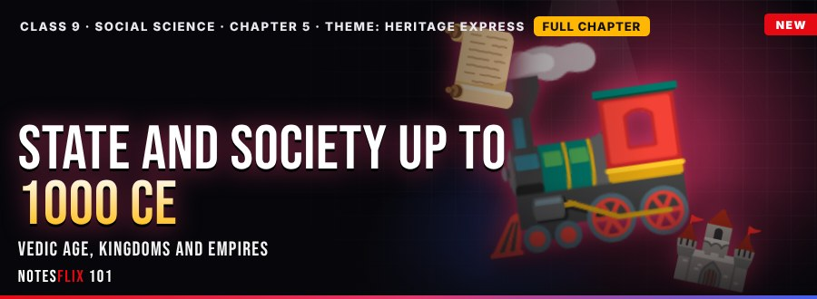
Part 1 5: State and Society up to 1000 CE
The Vedic age, janapadas and mahajanapadas, the Mauryas, the Guptas and early regional kingdoms
- The Vedic ExpressFREE — The Vedas and early Vedic society, iron and the later Vedic age, and the janapadas and mahajanapadas, with a duration calculator, an iron-plough simulator, sorting games and a boss battle. (35 min)
- Empires and KingdomsPASSWORD — The Mauryan empire and its administration, Ashoka and dhamma, and the Gupta age and regional kingdoms up to 1000 CE, with a revenue calculator, a BCE-to-CE gap simulator, sorting games and a boss battle. (35 min)
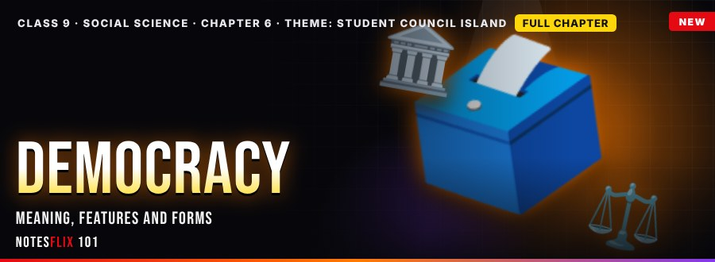
Part 1 6: Democracy
What democracy means, its features, direct and representative forms, and democracy in India
- Council IslandFREE — The meaning of democracy, its key features, and direct and representative democracy, with an election-winner calculator, an equal-vote simulator, sorting games and a boss battle. (35 min)
- Why DemocracyPASSWORD — Arguments for and against democracy, how the right to vote spread, and democracy in India with its challenges, with a satisfaction calculator, a turnout simulator, sorting games and a boss battle. (35 min)
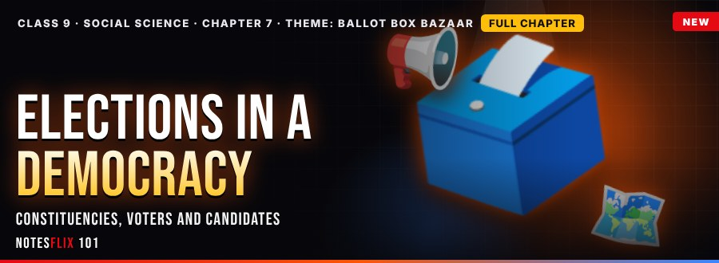
Part 1 7: Elections in a Democracy
Why elections, constituencies, voters, candidates and the campaign
- Ballot Box BazaarFREE — Purpose of elections, constituencies and reserved seats, voters lists, candidates and the Model Code of Conduct, with a spending-limit calculator, sorting games and a boss battle. (35 min)
- Fair Play BazaarPASSWORD — Polling day, EVMs, counting, first past the post and the Election Commission, with turnout, margin and repoll calculators, sorting games and a boss battle. (35 min)
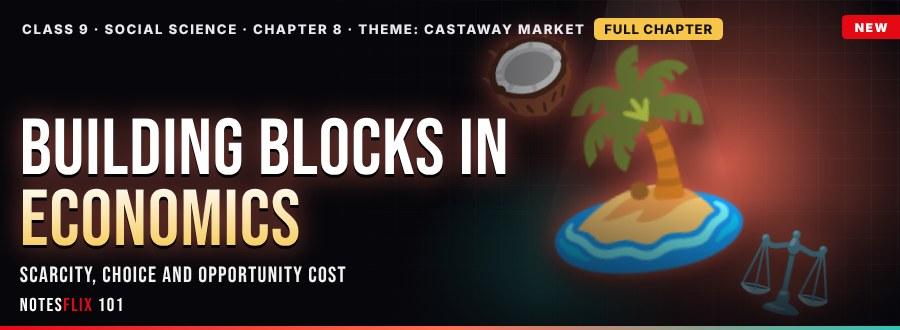
Part 1 8: Building Blocks in Economics
Wants, scarcity, resources, choice and the problem of opportunity cost
- Castaway MarketFREE — Needs and wants, scarcity, the four factors of production, choice and opportunity cost, with calculators, sorting games and a boss battle. (35 min)
- Castaway TownPASSWORD — What, how and for whom to produce, the production possibility curve, and market, command and mixed economies, with calculators, sorting games and a boss battle. (35 min)
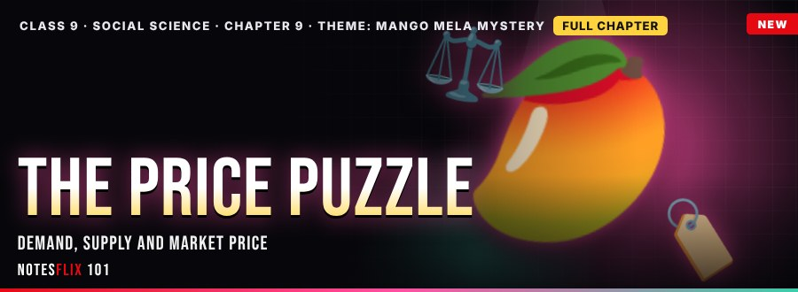
Part 1 9: The Price Puzzle
Demand, supply, equilibrium and how market prices are found
- Mango Mela MysteryFREE — Demand and its law, supply and its law, and the equilibrium price with surplus and shortage, with a demand-supply simulator, sorting games and a boss battle. (35 min)
- Mango Mela Day TwoPASSWORD — Shifts in demand and supply, the new equilibrium, price ceilings and the minimum support price, with simulators, sorting games and a boss battle. (35 min)
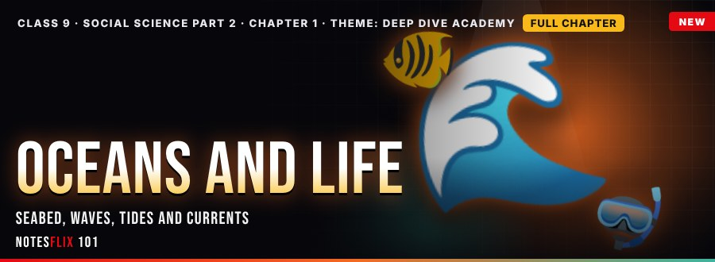
Part 2 1: Oceans and Life
The ocean floor, waves, tides, currents and the life they support
- Deep Dive AcademyFREE — Shelf, slope, plain and trench, waves and tides, and warm and cold currents, with a sonar depth calculator, tide timer, sorting games and a boss battle. (35 min)
- Living OceanPASSWORD — Ocean zones, food chains, coral reefs, resources and conservation, with an energy-chain simulator, a fish-stock calculator, sorting games and a boss battle. (35 min)
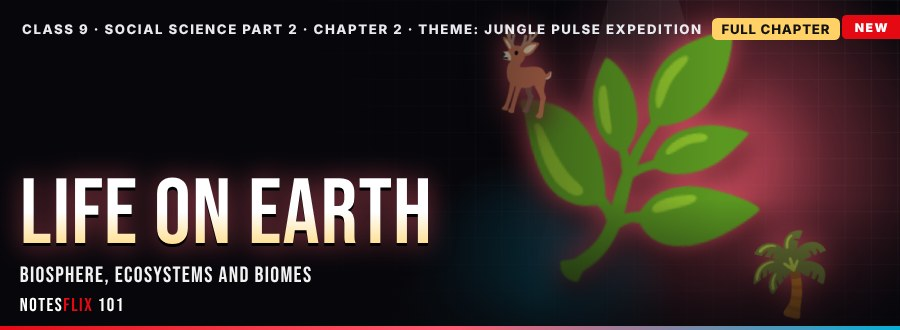
Part 2 2: Life on Earth
The biosphere, ecosystems, food webs, biomes and adaptation
- Jungle Pulse ExpeditionFREE — The biosphere, producers, consumers and decomposers, the 10 per cent energy rule, and the major biomes with adaptations, with simulators, sorting games and a boss battle. (35 min)
- Jungle GuardiansPASSWORD — Biodiversity, India as a megadiverse country, threats such as habitat loss and poaching, and conservation through parks and reserves, with simulators and a boss battle. (35 min)
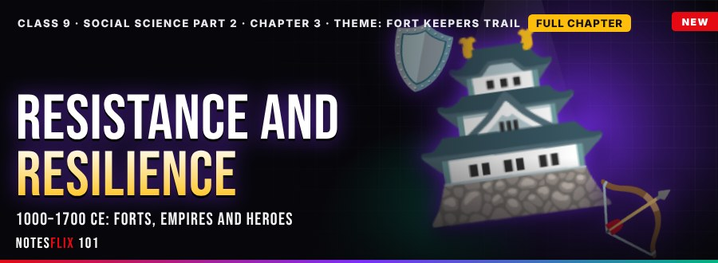
Part 2 3: Resistance and Resilience 1000–1700 CE
Defending the land: Tarain, Vijayanagara, the Ahoms, Rani Durgavati and Maharana Pratap
- Fort Keepers TrailFREE — The age of challenges, the Vijayanagara Empire and the Ahoms, and brave rulers like Rani Durgavati and Maharana Pratap, with timeline calculators, sorting games and a boss battle. (35 min)
- Swarajya SummitPASSWORD — Shivaji and Swarajya, the Gurus and the Khalsa, and the bhakti and Sufi voices, crafts and learning that kept India resilient, with timeline calculators and a boss battle. (35 min)
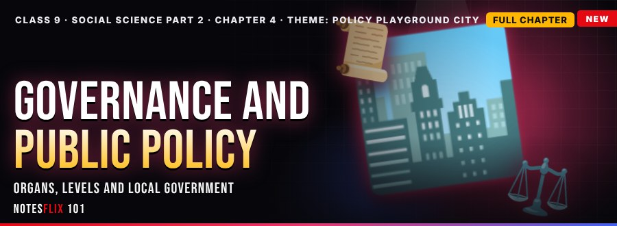
Part 2 4: Governance and Public Policy
Organs and levels of government, local self-government and good governance
- Policy PlaygroundFREE — Governance, the legislature, executive and judiciary, the Union, State and Concurrent lists, panchayats and good governance, with simulators, sorting games and a boss battle. (35 min)
- Policy Playground Day TwoPASSWORD — The policy cycle, schemes like MGNREGA and the RTE Act, e-governance and the Right to Information, with wage-bill and cost calculators, sorting games and a boss battle. (35 min)
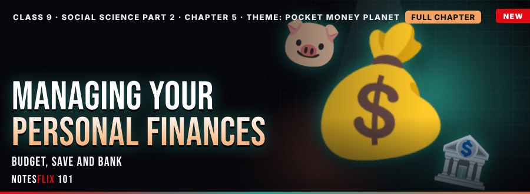
Part 2 5: Managing Your Personal Finances
Income, budgeting, saving for goals, bank accounts and simple interest
- Pocket Money PlanetFREE — Income and expenses, a weekly budget, saving for goals, bank accounts and simple interest, with budget, goal and interest calculators, sorting games and a boss battle. (35 min)
- Pocket Money Planet IIPASSWORD — Compound interest and inflation, insurance, UPI safety and fraud, credit and EMI, and the basics of risk and return, with calculators, sorting games and a boss battle. (35 min)
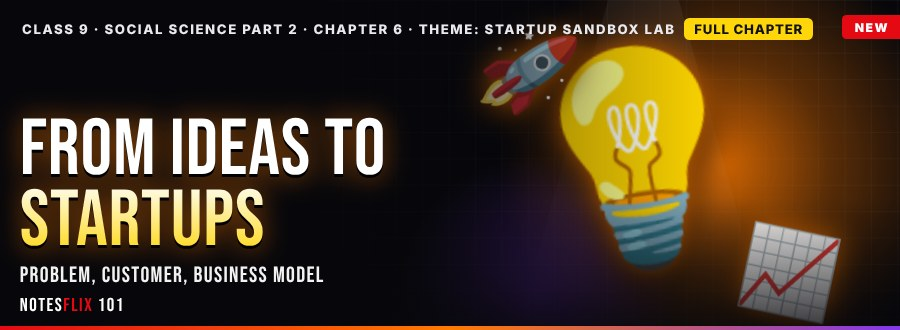
Part 2 6: From Ideas to Startups
Spot a problem, know your customer and build a business model that earns a profit.
- Startup Sandbox LabFREE — Three young inventors turn ideas into businesses: finding problems, researching customers, and working out revenue, cost, profit and break-even. (35 min)
- Funding and GrowthPASSWORD — The inventors raise capital, test prototypes, build a brand, form a team and learn why ethics, sustainability and resilience matter. (35 min)
Frequently asked questions
Are the Class 9 Social Science (SST) notes free?
15 of 29 parts are free to read with no password (Part 1 of every chapter). The other parts open with a password from Notesflix 101.
Which syllabus do these Class 9 Social Science (SST) notes follow?
They follow the new NCERT textbook Understanding Society: India and Beyond (2026-27). Every chapter is split into short interactive parts with simple explanations, flash cards, quizzes and board-style exam questions with model answers.
How many chapters are covered?
15 chapters: Understanding Social Science; Shaping of the Earth's Surface; Atmosphere and Climate; Early Humans and Beginning of Civilisation; State and Society up to 1000 CE; Democracy; Elections in a Democracy; Building Blocks in Economics; The Price Puzzle; Oceans and Life; Life on Earth; Resistance and Resilience 1000–1700 CE; Governance and Public Policy; Managing Your Personal Finances; From Ideas to Startups.
Is there a practice test for Class 9 Social Science (SST)?
Yes. The Class 9 Social Science (SST) Practice Marathon has 899 multiple-choice questions taken from the notes: a weekly marathon (30 questions, 20 minutes, the same set for everyone that week), a 10-question sprint, a 100-question mega marathon and chapter practice. A free sample is open to all; the full bank opens with the subject password.
How do I get the password for locked notes?
Email support@notesflix101.com with your name, class, school and the Gmail ID you sign in with. The same password opens every locked Social Science (SST) note.